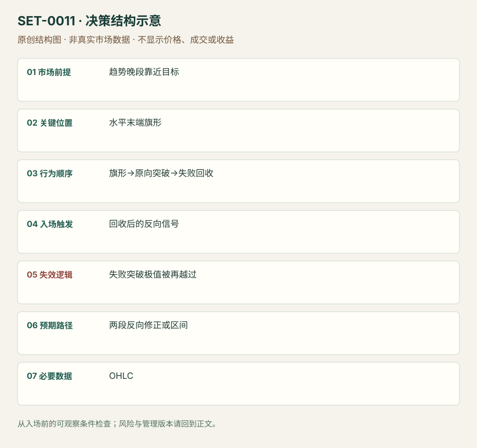

趋势末端最后旗形突破失败
Final Flag Reversal · SET-0011 · reviewed · v1.0.0
盈利证据：not_established。审查范围与来源版本见第13节；未知字段保留缺失原因。
1. 名称与快速概览
已经推进较久的趋势在邻近目标处形成横向旗形；看似恢复原趋势的突破不能持续并被回收时，考虑反向运动。突破重新建立原向推进则失败。
记录口径：PA core；必要数据 OHLC。名称性质：编辑性描述名，英文保留来源术语以便检索。reviewed 只表示本条规则与证据记录审查通过，盈利状态为 not_established。
2. 本质与行为假说
可见是晚段横向重叠、对侧压力及突破回收；“最后”是候选位置判断，只有事后才知道它确实终结趋势。
3. 适用市场与环境
事前已有多轮推进或延伸，已知目标/阻力接近，旗形更加水平且出现逆向压力。初期健康趋势的普通旗形不合适。
来源实用市场：Brooks日内价格图。
Session：美股/ES现金参考段 09:30–16:00 America/New_York；收盘前平仓。期货夜盘单独建背景，不将其并入开盘区间。
跨市场：本版不主张已经验证的跨市场迁移；更换市场必须重定数据来源、流动性与session。
4. 出现前的观察清单
必要：较晚趋势段、水平重叠、延续失败。增强：磁铁接近、反向柱强。否决：仅因图形横向就提前做反转，或初始冲击仍很强。
5. 形成过程与状态转换
趋势推进→晚段横向旗形→原向越界→跟随消失→回收旗形/反向信号→管理；顺向强跟随恢复则取消。
6. Entry trigger 与执行方式
来源围绕失败延续和反向信号；本研究的可复盘执行版等回收后反向信号端点触发。该具体等待方式是编辑操作化，不声称Brooks统一下单规则。
7. Invalidation 与止损逻辑
失败突破极值重新被有效越过、恢复原向跟随会否定反转；保护该极值。反转距离过远就放弃，不能扩大止损只为保留假说。
8. Exit、target 与 trade management
以横旗对侧、旧摆动及两段修正为管理参照；来源TBTL属于经验期待，不是固定持有期限或实证概率。允许先转为区间，日内到时退出。
9. 常见 variations
多空镜像、旗形大小和MTR重叠标签只计本条一次；若同一交易也符合MTR，复盘选择主因并保留次标签。
10. 失败方式与不交易条件
正常亏损：突破回收后原趋势再续。未成立：早段旗形或没有延续尝试。偏离：提前猜最后一旗。趋势强时很多旗形延续，应保留反例。
11. 与相近 setups 的区别
12. 图表与案例解读
已查看FF-D图：空头推进中蓝色横旗后出现新低，随后绿色反向区域；作者又标LL-MTR。同一机会可有两个描述，不能按标签算两次交易。初次横旗时后续新低与上涨尚未知。原图缺品种、日期和周期，实际入场及盈亏未披露。
- [VIS-000012] Final bear flag - Lower Low Major Trend Reversal；定位：Final flags / FF-D。蓝色横旗之后向下突破失败，再反向；与LL-MTR标签重叠。 验证：chart_viewed。

本地原创示意（VIS-000068，非真实市场数据）：

小屏阅读可打开原尺寸示意图并缩放。

此图用于对照识别顺序与风险定义；不计入真实案例覆盖率。
视觉材料元数据与查看范围
- VIS-000012 · real_source_chart / structure_and_trigger / chart_viewed
品种：未知/不适用；日期：未知/不适用；周期：未知/不适用；时区：未知/不适用
品种未在图中核对；日期未在图中核对；周期未在图中核对；时区未在图中核对；来源图表不是成交审计 - VIS-000068 · synthetic_structure_diagram / illustration_only / generated_not_market_evidence
品种：未知/不适用；日期：未知/不适用；周期：未知/不适用；时区：未知/不适用
无真实品种、日期或价格：这是结构示意
13. 证据、分歧与未知项
单一原始教学材料，独立佐证有限。编辑触发与日内退出模块明确标出；没有可使用的胜率数据。
- [EVD-000018] Al Brooks，《10 best price action trading patterns》，SRC-0016；定位：Final flags。支持：趋势末端横向旗形、磁铁和对侧压力，延续突破失败后反向处理
审查例外：此条只有一份富信息原始资料，足以还原本条规则；独立佐证有限，未用背景页冒充第二份核验。后续优先寻找独立规则/失败案例。
14. 可用于复盘的检查表
- ☐ 下单前的前提可核对：趋势晚段靠近目标
- ☐ 事前标记位置：水平末端旗形
- ☐ 行为按顺序出现：旗形→原向突破→失败回收
- ☐ 实际触发符合选定版本：回收后的反向信号
- ☐ 事先写明本次否定条件：失败突破极值被再越过
- ☐ 目标/路径只用当时已知信息：两段反向修正或区间
- ☐ 数据满足 OHLC；记录时间、点差、滑点、队列和未成交
- ☐ 记录截止平仓及规则偏离；正常亏损不事后改成“未成立”
15. 后续验证问题
事前固定“晚段”和磁铁选取标准，保留成功延续的横旗；测反转候选的漏判与误判。
双向相关导航
- SET-0007 三推高潮后的反转 Final flag必须先有晚段横向旗形及其突破失败；本条不要求旗形。
- SET-0008 旧趋势破坏后再测极值的主要反转 MTR必先破旧通道再测极值；本条必先出现晚段横旗及其延续失败。
- SET-0005 内包线突破失败陷阱 Hikkake必有inside-bar和限定时序；本条没有该K线序列要求。
本条来源：SRC-0016